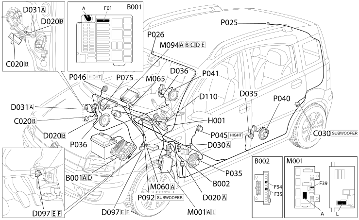

E4091 CONNECT - COMPONENT LOCATION
- Path
- Electrical equipment > 1 ELECTRICAL FUNCTIONS > E40 Instrument panel > E4091 CONNECT > E4091 CONNECT - COMPONENT LOCATION
- Kind
- component location drawing
- Applies to
- all engines; all production periods
- Interactive page
- https://sloeber94.github.io/elrnDB-fPnd/en/#/169002622
Applies to: all engines; all production periods
Component location

COMPONENTS
Component code | Description | Reference to the assembly |
|---|---|---|
JUNCTION UNIT | ||
JUNCTION UNIT UNDER DASHBOARD | ||
PASSENGER SIDE DASHBOARD EARTH | - | |
REAR LEFT EARTH | - | |
FACIA/REAR JUNCTION | - | |
REAR COUPLING FOR /FRONT DOOR. DRIVER'S SIDE | - | |
RIGHT FRONT DOOR REAR COUPLING/. | - | |
SHORT CIRCUITING COUPLING | - | |
CLOCK SPRING AND STEERING WHEEL CONTROLS COUPLING | - | |
IGNITION SWITCH | ||
BODY COMPUTER | ||
AIR BAG CONTROL UNIT | ||
RADIO RECEIVER NODE | - | |
AERIAL POWER SUPPLY/AMPLIFIER | ||
P26 | MICROPHONE | - |
SPEAKER ON FRONT DOOR LEFT | ||
SPEAKER ON FRONT RIGHT DOOR | ||
SPEAKER IN REAR LEFT DOOR | ||
SPEAKER ON RIGHT REAR DOOR | ||
LEFT TWEETER SPEAKER | - | |
RIGHT TWEETER SPEAKER | - | |
CD PLAYER/CHANGER | - | |
SUBWOOFER | - |
Topics linked from this page (27)
- 5505A multi-function components
- 5505C vehicle compartment wiring
- 5520A ignition switch
- 5570T car radio and car telephone
- 5580C air bag system
- B001 JUNCTION UNIT
- B002 JUNCTION UNIT UNDER DASHBOARD
- C020 PASSENGER SIDE DASHBOARD EARTH
- C030 LEFT REAR EARTH
- D020 DASHBOARD/REAR COUPLING
- D030 DRIVER'S FRONT DOOR COUPLING
- D031 PASSENGER FRONT DOOR COUPLING
- D097 SHORT CIRCUITING COUPLING
- D110 CLOCK SPRING AND STEERING WHEEL CONTROLS COUPLING
- H001 IGNITION SWITCH
- M001 BODY COMPUTER
- M060 AIR BAG CONTROL UNIT
- M094 RADIO RECEIVER NODE
- P025 AERIAL POWER SUPPLY
- P035 SPEAKER IN DRIVER'S FRONT DOOR
- P036 SPEAKER IN PASSENGER FRONT DOOR
- P040 SPEAKER IN REAR LEFT DOOR
- P041 SPEAKER ON RIGHT REAR DOOR
- P045 DRIVER'S FRONT TWEETER SPEAKER
- P046 PASSENGER SIDE FRONT TWEETER SPEAKER
- P075 CD PLAYER/CHANGER
- P092 SUBWOOFER